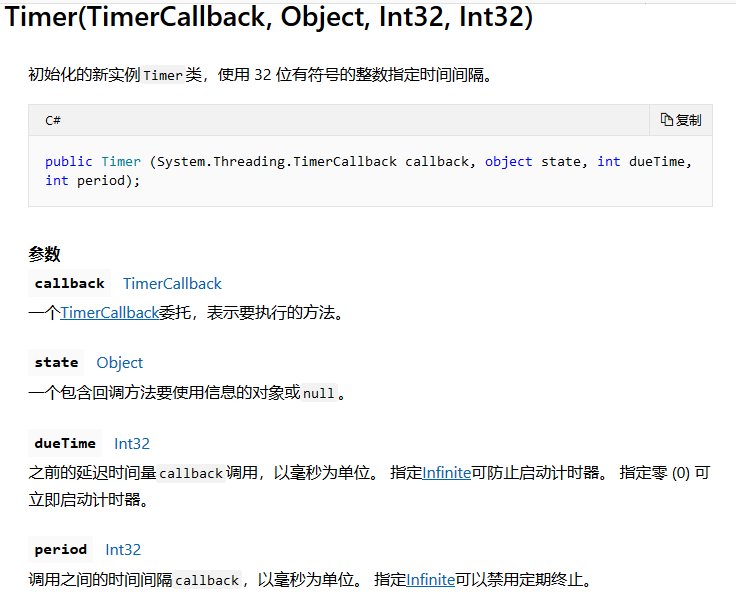

前两天实现某个功能需要做一个提示框 并且能够自动关闭的,就从网上搜了一个能够自动关闭的提示框 ,但由于我需要的场景是不确定计时时间的,所以并没有使用到该窗体,但是我觉得可以留存备用 ,后边也把我
这种倒计时的提示框用处还是很多的,用于自动弹窗 自动关闭 ,虽然在我的项目中没有
其核心方法在 timer(TimerCallBack,Object,int32,int32) TimerCallBack 是一个委托 ,代表要执行的方法,其用途可以用在各个定时去调用方法的场景,而且可以设置窗体的FormBorderStyle的属性为None,设置窗体边框和标题栏外观不显示.

以下为网上找的一段代码实现的定时关闭窗体的功能 ,但由于是之前找的,已经找不到原作者,在此表示十分抱歉
以下代码非本人编写:
using System;
using System.Collections.Generic;
using System.ComponentModel;
using System.Data;
using System.Drawing;
using System.Linq;
using System.Text;
using System.Threading.Tasks;
using System.Windows.Forms;
namespace Demo
{
public partial class AutoCloseMessageBox : Form
{
public AutoCloseMessageBox()
{
InitializeComponent();
}
public void getMassage(string text)
{
label1.Text = text;
}
public void GetText(string caption)
{
this.Text = caption;
}
System.Threading.Timer _timeoutTimer;
string _caption;
AutoCloseMessageBox(string text, string caption, int timeout)
{
_caption = caption;
_timeoutTimer = new System.Threading.Timer(OnTimerElapsed,
null, timeout, System.Threading.Timeout.Infinite);
AutoCloseMessageBox m_MassageBox = new AutoCloseMessageBox();
m_MassageBox.getMassage(text);
m_MassageBox.GetText(caption);
m_MassageBox.ShowDialog();
public static void Show(string text, string caption, int timeout)
{
new AutoCloseMessageBox(text, caption, timeout);
}
void OnTimerElapsed(object state)
{
IntPtr mbWnd = FindWindow(null, _caption);
if (mbWnd != IntPtr.Zero)
SendMessage(mbWnd, WM_CLOSE, IntPtr.Zero, IntPtr.Zero);
_timeoutTimer.Dispose();
}
const int WM_CLOSE = 0x0010;
[System.Runtime.InteropServices.DllImport("user32.dll", SetLastError = true)]
static extern IntPtr FindWindow(string lpClassName, string lpWindowName);
[System.Runtime.InteropServices.DllImport("user32.dll", CharSet = System.Runtime.InteropServices.CharSet.Auto)]
static extern IntPtr SendMessage(IntPtr hWnd, UInt32 Msg, IntPtr wParam, IntPtr lParam);
}
}调用时直接使用类名.show(text,captiom,timeout) 直接调用即可
下边是当时的项目使用场景的解决办法
using System;
using System.Collections.Generic;
using System.ComponentModel;
using System.Data;
using System.Drawing;
using System.Linq;
using System.Text;
using System.Threading.Tasks;
using System.Windows.Forms;
namespace NewuView.Mix
{
public partial class ErrorForm : Form
{
public ErrorForm()
{
InitializeComponent();
}
private void BarcodeErrorForm_Load(object sender, EventArgs e)
{
this.ShowInTaskbar = false;
}
public void Clear()
{
if (this.InvokeRequired)
{
this.BeginInvoke(new MethodInvoker(Clear));
}
else
{
this.richTextBox1.Clear();
}
}
public void SetMsg(string msg)
{
if (this.InvokeRequired)
{
this.BeginInvoke(new Action<string>(SetMsg), msg);
}
else
{
this.richTextBox1.AppendText(msg + Environment.NewLine);
}
}
public Point Point1 { get; set; }
public void ShowForm()
{
if (this.InvokeRequired)
{
this.Invoke(new MethodInvoker(ShowForm));
}
else
{
this.Location = Point1;
this.BringToFront();
this.Visible = true;
}
}
public void HideForm()
{
if (this.InvokeRequired)
{
this.Invoke(new MethodInvoker(HideForm));
}
else
{
this.richTextBox1.Clear();
this.Visible = false;
}
}
}
}该窗体可以用于实时监控某一个状态时 而弹出的提示框 并根据状态改变而隐藏
使用时,new一个该errorForm
在该窗体有一个RichTextBox,用来显示提示信息,使用SetMsg,设置要显示的信息
需要弹出时,实例调用Show()方法 实际就是讲该窗体的visible属性置为true,让窗体显示,并且调用Clear方法,清除提示信息
需要隐藏时,实例调用HideForm()方法,将窗体visible属性设置为false,调用clear方法,清除提示信息